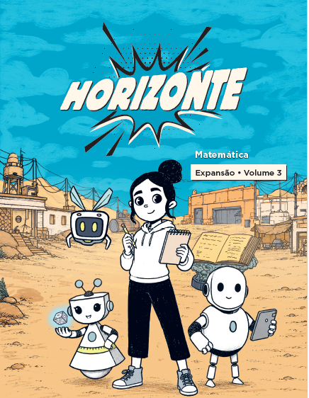

MATEMÁTICA · RECOMPOSIÇÃO DA APRENDIZAGEM
Rubrica formativa de frações
Orientações para o Professor Tutor observar estratégias, interpretar evidências, mediar e devolver ao estudante um próximo passo concreto.
Aquisição, Consolidação e Expansão descrevem o momento da habilidade observada. Não são rótulos permanentes do estudante.

COMO USAR
Um percurso de observação e intervenção
- PlanejarEscolha um foco e antecipe estratégias e equívocos possíveis.
- ProporPermita a primeira tentativa com desenho, objetos, cálculo ou algoritmo.
- InvestigarPeça que o estudante mostre e explique o significado dos números.
- MediarOfereça uma pergunta ou recurso específico e registre o efeito.
- RetomarDevolva um avanço e reaplique uma tarefa análoga com menos apoio.
INSTRUMENTO PREENCHÍVEL
Rubrica por critério
Avalie sete critérios separadamente. Use NO quando a tarefa não oferecer evidência e EI quando a tentativa ainda não sustentar um descritor. A, C e E descrevem a relação matemática demonstrada. Registre o apoio em campo próprio; recursos de acesso não reduzem o nível por si só. As escolhas ficam neste navegador e podem ser impressas.
PASSO A PASSO VISUAL
Jogos de frações da Coleção Horizonte
As imagens mostram o primeiro desafio de cada jogo, capturado em 29 de setembro de 2026. Peça a justificativa antes do clique e use a pontuação somente como evidência complementar. Abrir os jogos.
ORIENTAÇÃO E ACOMPANHAMENTO
Devolutiva ao Professor Tutor
Use evidências da condução e das produções, sem julgar a prática por um único acerto. Reconheça uma decisão pedagógica produtiva, indique um ajuste observável e combine o que verificar na reaplicação.
Devolutiva ao estudante
Converta a análise em uma fala curta: avanço, próximo passo e evidência a observar. Evite anunciar o nível da rubrica como rótulo da criança.
Referências e fundamentos
Os descritores A/C/E e os códigos P0–P3 são convenções deste instrumento. A BNCC orienta as habilidades; Simon (1995) apoia o planejamento por hipóteses sobre o raciocínio; Cyrino e Jesus (2014) apoiam a análise de tarefas; Black e Wiliam (2009) e Hattie e Timperley (2007) fundamentam o uso das evidências e da devolutiva; Siegler et al. (2010) orientam o ensino de frações. Bloom ajuda a planejar a demanda cognitiva, sem equivaler a uma escala de proficiência.
Habilidades estruturantes: EF02MA08, EF03MA09, EF04MA09, EF05MA03–05, EF06MA07 e EF06MA09, EF07MA08. Selecione a habilidade conforme a tarefa e a evidência investigada.
- BRASIL. Ministério da Educação. Base Nacional Comum Curricular. Brasília: MEC, 2018. Matemática, Ensino Fundamental. Disponível em: Consultar fonte Acesso em: 2 out. 2026.
- SÃO PAULO (Estado). Secretaria da Educação. Material Horizonte. In: Entenda o Professor Tutor Anos Finais. Escola Total, s.d. Disponível em: Consultar fonte Acesso em: 2 out. 2026. Referência institucional da organização em volumes; não atribuir a esta página os descritores locais do modelo.
- CYRINO, Márcia Cristina de Costa Trindade; JESUS, Cristina Cirino de. Análise de tarefas matemáticas em uma proposta de formação continuada de professoras que ensinam matemática. Ciência & Educação, v. 20, n. 3, p. 751-764, 2014. DOI: Consultar fonte
- SIMON, Martin A. Reconstructing mathematics pedagogy from a constructivist perspective. Journal for Research in Mathematics Education, v. 26, n. 2, p. 114-145, 1995. DOI: Consultar fonte Registro: Consultar fonte
- BLACK, Paul; WILIAM, Dylan. Developing the theory of formative assessment. Educational Assessment, Evaluation and Accountability, v. 21, n. 1, p. 5-31, 2009. DOI: Consultar fonte
- HATTIE, John; TIMPERLEY, Helen. The power of feedback. Review of Educational Research, v. 77, n. 1, p. 81-112, 2007. DOI: Consultar fonte
- KRATHWOHL, David R. A revision of Bloom’s taxonomy: an overview. Theory Into Practice, v. 41, n. 4, p. 212-218, 2002. DOI: Consultar fonte Esta publicação apresenta a taxonomia revisada de Anderson e Krathwohl.
- SIEGLER, Robert et al. Developing effective fractions instruction for kindergarten through 8th grade: a practice guide. Washington, DC: Institute of Education Sciences, U.S. Department of Education, 2010. NCEE 2010-4039. Disponível em: Consultar fonte Acesso em: 2 out. 2026.